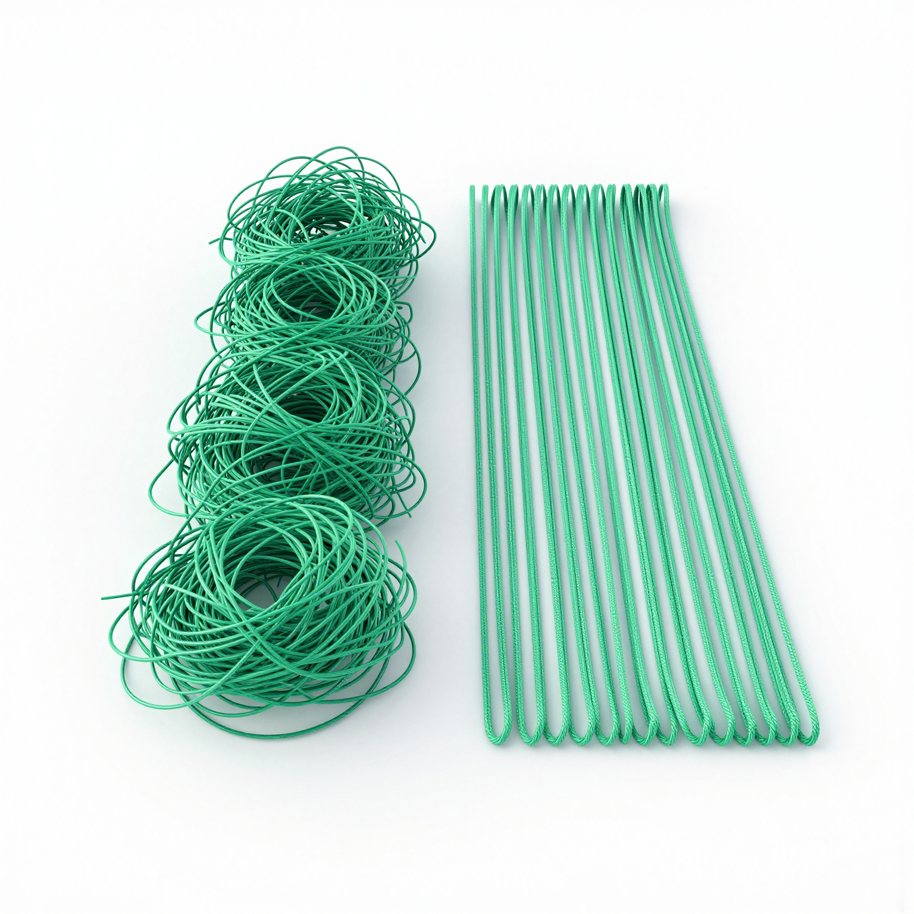
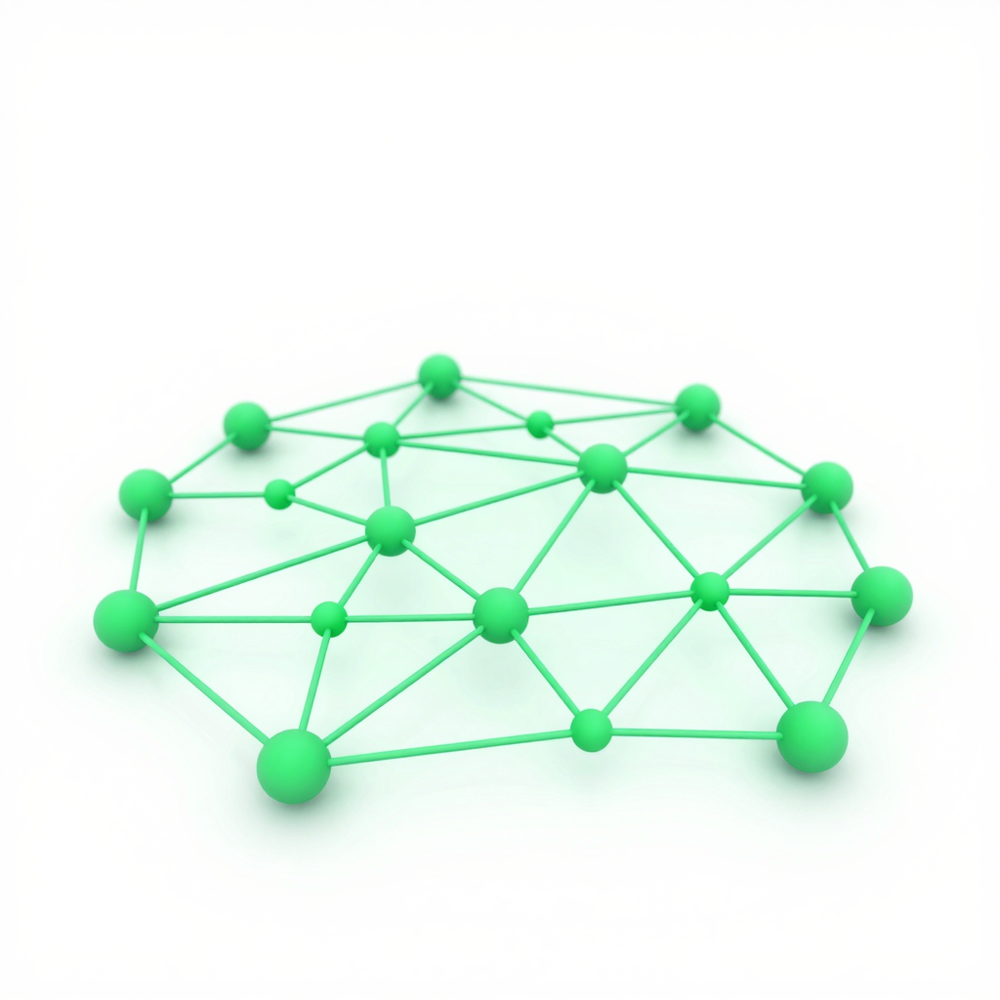

…so you've got time for the rest.
Ryan Alexander Black · AI Solutions Architect
Less of the boring stuff means more time for the rest of your life.
AI won't replace you — but a person using it might replace someone who won't. So be the one who uses it.


Let the machine do the busywork — so you're free to serve the people in front of you.
Come say hi afterwards — I just like this stuff.
…or scan for a free report on where AI could save your business time. Drop your website and I'll send it back.
Ryan Alexander Black · ryanalexanderblack@gmail.com
www.ryanalexanderblack.com